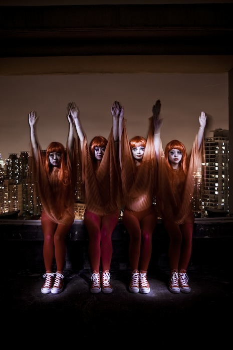
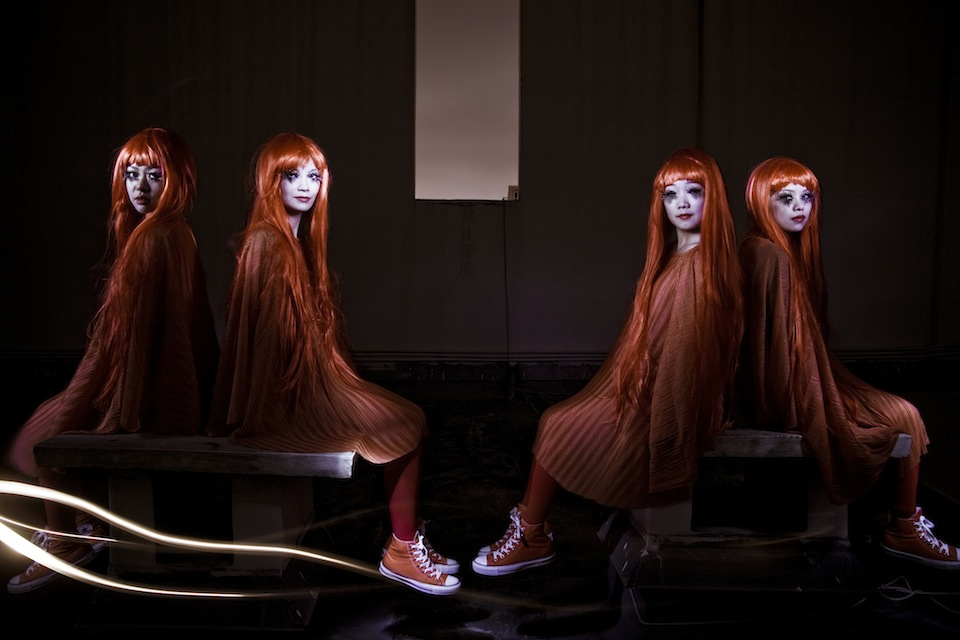

The Weird Tour of China, Part II: Shanghai Bright Night
Kitty was approached by Converse China to produce a series of videos to feature the Converse Fall 2012 Color Collection of their Chuck Taylor shoes. The videos were to follow all of the usual applications of The Weird Girls Project and excluding the shoes, the video concept and direction had completely free reign.
The setting for this piece was a high rise building just on the south side of the river in Shanghai. It enables the audience to see the beauty and immense structure of the city. The video concentrates on intimacy of close filming to reflect the close proximity of over twenty million people in the city.
- Concept and Direction: Kitty Von-Sometime
- Director of Photography: Hrafn Garðarsson
- Official Photographer: Tang Ting
- Editor: Gunnar B. Gudbjornsson
- Video Grading and Post Production: Michael Todd
- Photo grading: Einar Smárason
- Production Manager: Sally Shi
- Costumes: Tom Yong
- Official Music: The Times by R3
- 17 April 2012

